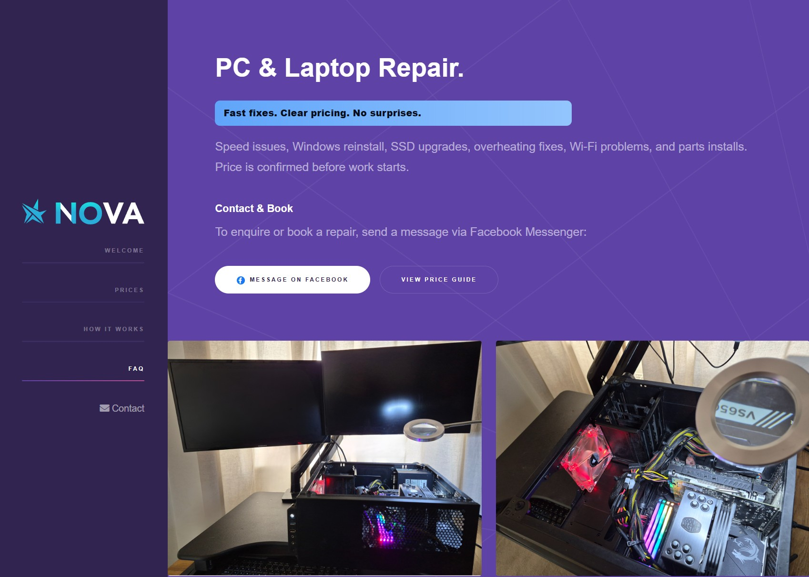
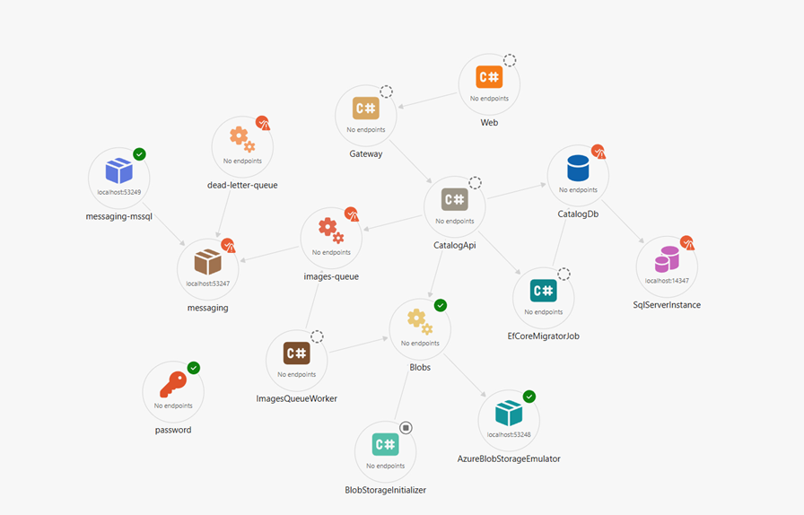

February 06, 2026
Case Study — Delivery Intelligence (CI/CD)
In a previous role, our CI/CD metrics were effective at answering immediate operational questions
(for example, “what just broke?”) but weak at supporting long-term delivery decisions. Once the
data aged out of short retention windows, so did the context, and discussions about delivery
efficiency repeatedly reverted to intuition.

Nova is an SMB PC repair service. I was engaged to design and deliver the
platform and operational infrastructure enabling the business’ digital
presence, service intake, and future operational tooling.
This is an ongoing engagement. The current release establishes a secure,
automated baseline supporting the public service launch, with further
platform capabilities planned in subsequent phases.

I am currently working on an architecture-focused .NET demo that explores
service orchestration, API design, and operational concerns commonly found
in enterprise systems.
The work prioritizes realistic constraints—identity, data access patterns,
observability, and UI/API boundaries—over feature completeness.